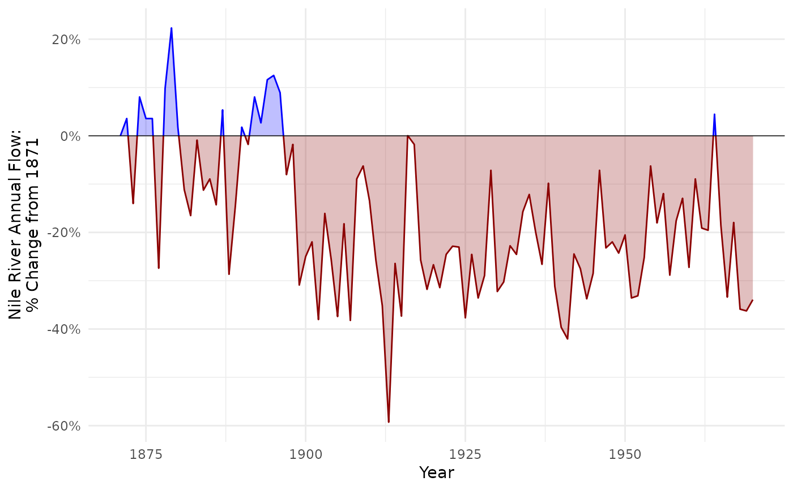

Augments a dataframe with x-values where y = f(x) = 0. This is useful for creating area charts with different fills for values less than versus greater than 0.
Value
The input data frame with additional rows representing the crossings (where y = 0), and two new columns:
pos_neg: Indicates whether the y-value is positive ("pos") or negative ("neg").cross_grp: A grouping variable for the segments between crossings.
Details
The returned dataframe will include columns pos_neg and cross_group. Within geom_area(), cross_group should be mapped to group, while pos_neg should be mapped to aesthetics such as fill or color.
Examples
nile_flow <- tibble::tibble(
Year = time(Nile),
Flow = as.numeric(Nile),
FlowDelta = (Flow - Flow[[1]]) / Flow[[1]]
)
nile_flow_x0 <- add_crossings(nile_flow, Year, FlowDelta)
ggplot2::ggplot(nile_flow_x0, ggplot2::aes(Year, FlowDelta)) +
ggplot2::geom_area(
ggplot2::aes(group = cross_grp, color = pos_neg, fill = pos_neg),
alpha = 0.25,
show.legend = FALSE
) +
ggplot2::geom_hline(yintercept = 0, linewidth = 0.25) +
ggplot2::scale_color_manual(
values = c("darkred", "blue"),
aesthetics = c("color", "fill")
) +
ggplot2::scale_y_continuous(
"Nile River Annual Flow:\n% Change from 1871",
labels = scales::percent
) +
ggplot2::theme_minimal()
